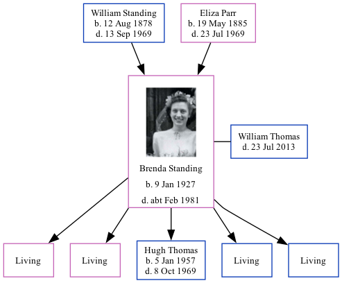

Brenda Margaret Thomas (née Standing) 1927 - c1981 [ Home ] | [ Calendar ] | [ Surnames Index ] | [ Family History ]The daughter of William Standing (a laundryman) and Eliza Parr Brenda Standing , the fourth cousin once-removed on the father's side of Nigel Horne , was born in Romford, London, England on Jan 9, 19271,2,3 and married William Thomas (with whom she had 5 children: Susan C , June A , Hugh William , Steven M and Dominic P , along with 4 surviving children) in Ilford, London, England around Aug 19514 . In 1963, she lived at 25 Strafford Avenue in Ilford5 .
She died c. Feb 1981 in Romford1,3 .
Parents William Ernest was born on Aug 12, 1878Eliza Mary was born on May 19, 1885Children Hugh William was born on Jan 5, 1957Citations England & Wales deaths 1837-2007 - Findmypast England & Wales, Birth Index: 1916-2005 Online publication - Provo, UT, USA: The Generations Network, Inc., 2008.Original data - General Register Office. England and Wales Civil Registration Indexes. London, England: General Register Office. © Crown copyright. Published by permission of the Cont England & Wales, Death Index: 1984-2005 Online publication - Provo, UT, USA: The Generations Network, Inc., 2007.Original data - General Register Office. England and Wales Civil Registration Indexes. London, England: General Register Office. © Crown copyright. Published by permission of the Cont England & Wales, Marriage Index: 1916-2005 Online publication - Provo, UT, USA: The Generations Network, Inc., 2009.Original data - General Register Office. England and Wales Civil Registration Indexes. London, England: General Register Office. © Crown copyright. Published by permission of the Cont London, England, Electoral Registers, 1832-1965 Ancestry.com Operations, Inc. Media Brenda Standing England & Wales births 1837-2006 Transcription - BMD-B-1927-1-AZ-001167-015 England & Wales marriages 1837-2008 Transcription - BMD-M-1951-3-PZ-000313-074 England & Wales deaths 1837-2007 Transcription - BMD-D-1981-1-AZ-001187-099 Family Tree Interactive Map
Map
Generated by ged2site . Last updated on Feb 18, 2025